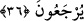

yerine “ara” ifadesinin tercih edilmesi, zikredilen delik ve merdiveni yapmak bir tarafa
aramaya bile güç yetirilemeyeceğini bildirmek içindir.
“Allah” hidayetlerini “dileseydi elbette onları hidayet üzerinde toplardı. Ancak onlar,
imkanları olduğu halde ve îmana sevk eden ayetleri müşahede etmelerine rağmen
iradelerini hidâyet tarafına yönlendirmedikleri için Allah bunu dilememiştir. Onlar da
îman etmemişlerdir. Şu halde bunun için sen kendini parçalama.
“O halde” artık sen olmayacak şeylere aşırı ısrar ederek ve sabredilmesi gereken
yerde sabırsızlık göstererek “sakın cahillerden olma!” Çünkü bu davranışlar, Allah
Teâlâ’nın işlerinin inceliklerine akıl erdiremeyen câhillere yakışır. Nitekim onların
îman etmelerini Allah Teâlâ’nın irade buyurmaması da bu sırlardandır.
Âyette Hz. Peygamber (s.a.) ehli olmayanlara aşırı şefkat ve merhamet göstermemesi
için Allah tarafından terbiye edilip yüksek edeble yetiştirilmektedir. Nitekim bir hadisi
şerifte şöyle buyurulur: “Allah beni terbiye etti, terbiyemi de ne güzel yaptı.”[98]
36. Ancak (samimiyetle) dinleyenler daveti kabul eder. Ölülere gelince, Allah
onları diriltecek, sonra da O’na döndürülecekler.
Bunlar gibi ölüler değil “ancak işitenler” anlamak ve düşünmek için kulak verenler
“dâveti”, senin îmana davetini “kabul eder.”
Hâfız der ki:
Feyzi kabul etmek için temiz bir yaratılış gerek
Yoksa her taş, her toprak inci ve mercan olmaz
“Ölülere” yani kâfirlere “gelince” Allah Teâlâ, onları hakkı dinlememe konusunda
kafirlere benzetmiştir. “Allah onları” kabirlerinden kaldırıp diriltir; sonra da hesap ve
ceza için sadece “O’na döndürülürler.” İşte ancak bu anda icabet ederler, daha önce
ise buna imkan yoktur.
[98]. Münâvî, I, 224